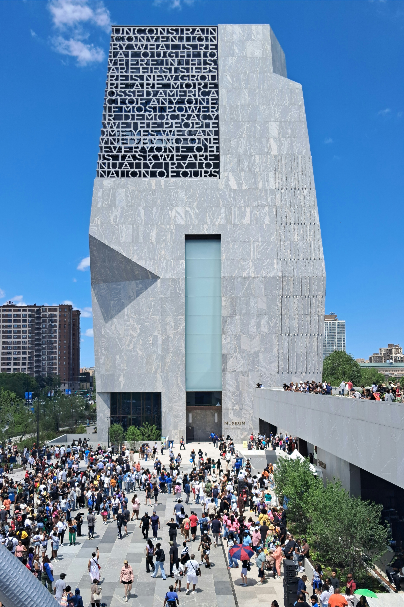
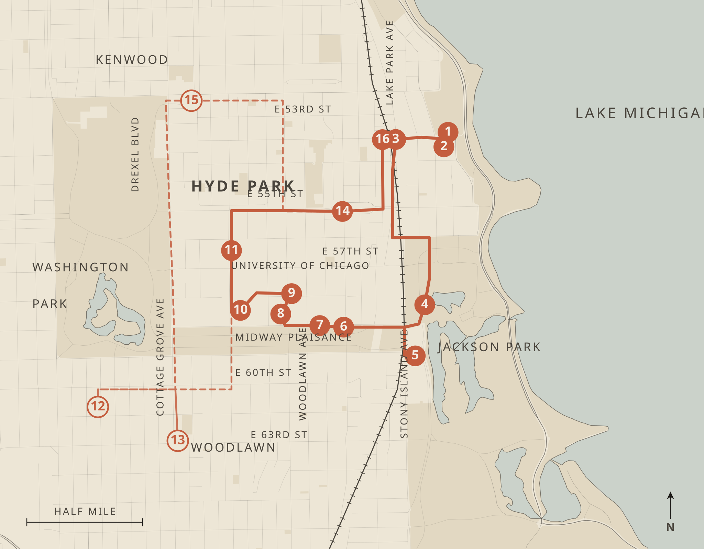

After renewal, Hyde Park held for decades at roughly one-third Black and one-half white. The integration was real. It came at the expense of the renters and small businesses the plan removed. The Obama Center, built by Lakeside Alliance, a construction team led by four Black-owned Chicago firms, opened on the old fairground on Juneteenth 2026.
